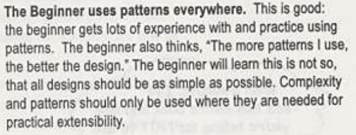
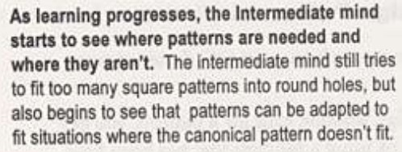
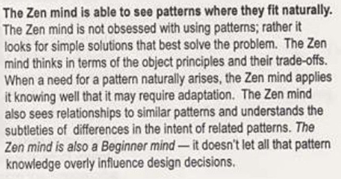

GOF & Head First
Conseils issus de "Design Patterns Head First", dont certains (la plupart) viennent de GOF.OO Basics
- Abstraction
- Encapsulation
- Polymorphism
- Inheritance
OO Principles
- Encapsulate what varies.
- Favor composition over inheritance.
- Program to interfaces, not to implementations.
- Strive for loosely-coupled designs between objects that interact.
- Classes should be open for extension but closed to modification.
- Depend on abstraction. Do not depend on concrete classes.
- Only talk to your friends.
- Don't call us, we'll call you.
- A class should have only one reason to change
Pattern mind
  The Art of Unix Programming
By Eric Steven Raymond, 2003Basics of the Unix philosophy :
- Rule of Modularity: Write simple parts connected by clean interfaces.
- Rule of Clarity: Clarity is better than cleverness.
- Rule of Composition: Design programs to be connected to other programs.
- Rule of Separation: Separate policy from mechanism; separate interfaces from engines.
- Rule of Simplicity: Design for simplicity; add complexity only where you must.
- Rule of Parsimony: Write a big program only when it is clear by demonstration that nothing else will do.
- Rule of Transparency: Design for visibility to make inspection and debugging easier.
- Rule of Robustness: Robustness is the child of transparency and simplicity.
- Rule of Representation: Fold knowledge into data so program logic can be stupid and robust.
- Rule of Least Surprise: In interface design, always do the least surprising thing.
- Rule of Silence: When a program has nothing surprising to say, it should say nothing.
- Rule of Repair: When you must fail, fail noisily and as soon as possible.
- Rule of Economy: Programmer time is expensive; conserve it in preference to machine time.
- Rule of Generation: Avoid hand-hacking; write programs to write programs when you can.
- Rule of Optimization: Prototype before polishing. Get it working before you optimize it.
- Rule of Diversity: Distrust all claims for “one true way”.
- Rule of Extensibility: Design for the future, because it will be here sooner than you think.
Unix autre
- (i) Make each program do one thing well. To do a new job, build afresh rather than complicate old programs by adding new features.
- (ii) Expect the output of every program to become the input to another, as yet unknown, program. Don't clutter output with extraneous information. Avoid stringently columnar or binary input formats. Don't insist on interactive input.
- (iii) Design and build software, even operating systems, to be tried early, ideally within weeks. Don't hesitate to throw away the clumsy parts and rebuild them.
- (iv) Use tools in preference to unskilled help to lighten a programming task, even if you have to detour to build the tools and expect to throw some of them out after you've finished using them.
- This is the Unix philosophy: Write programs that do one thing and do it well. Write programs to work together. Write programs to handle text streams, because that is a universal interface.
- Rule 1. You can't tell where a program is going to spend its time. Bottlenecks occur in surprising places, so don't try to second guess and put in a speed hack until you've proven that's where the bottleneck is.
- Rule 2. Measure. Don't tune for speed until you've measured, and even then don't unless one part of the code overwhelms the rest.
- Rule 3. Fancy algorithms are slow when n is small, and n is usually small. Fancy algorithms have big constants. Until you know that n is frequently going to be big, don't get fancy. (Even if n does get big, use Rule 2 first.)
- Rule 4. Fancy algorithms are buggier than simple ones, and they're much harder to implement. Use simple algorithms as well as simple data structures.
- Rule 5. Data dominates. If you've chosen the right data structures and organized things well, the algorithms will almost always be self-evident. Data structures, not algorithms, are central to programming.
- When in doubt, use brute force.
Divers 1
-
"Programs are meant to be read by humans, and only incidentally for computers to execute."
Donald Knuth -
"Write programs for people first, computers second."
Steve McConnell
Divers 2
- Ecrire du code lisible, compréhensible, maintenable - très important (7. Rule of Transparency)
- Une fonction, un fonctionnalité ; une classe, un rôle.
- Seul du code non écrit est garanti sans bug (éviter d'écrire du code qui servira "au cas où").